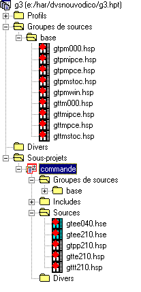

Un groupe de sources est un ensemble de fichiers qui est utilisé dans plusieurs sous-projets.
Plutôt que d'avoir à insérer manuellement ces fichiers communs dans chaque sous-projet, nous allons créer un groupe et ensuite insérer le groupe dans chacun des sous-projets.
Exemple : le groupe "base" contient des sources qui figurent dans tous les sous-projets. Le fait d'ajouter le groupe "base" au sous-projet lui rajoute tous les sources contenus dans le groupe.

Voir également :
Pour créer / modifier / supprimer / renommer un groupe de sources